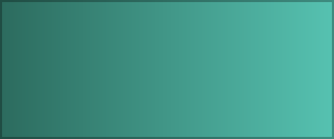

Beranda
Halaman ini berasal dari data/Index.html — isinya hanya potongan body,
tanpa <head>. Kerangkanya datang dari app.html.

Klik topik di panel kiri. Tanda membuka sub-topik di bawahnya.
Tekan / atau Ctrl+K untuk menyaring pohon berdasarkan nama folder.
Tombol tema di kanan atas menyimpan pilihan Anda dan ikut mewarnai halaman ini.
Alamat browser ikut berubah, jadi halaman mana pun bisa disimpan atau dibagikan.
| Topik | Keterangan |
|---|---|
| Aplikasi1 | Contoh topik yang punya sub-topik |
| Aplikasi1 › Module1 | Contoh topik bersarang |
| Aplikasi2 | Contoh topik tanpa sub-topik |
Buat folder baru di dalam data/, isi dengan Index.html berisi body saja, lalu klik dua kali:
buka-wiki.cmdNavigasi dibuat ulang dan wiki terbuka sendiri di browser dengan topik baru sudah ada di dalamnya.
file:// — tanpa web server, tanpa koneksi internet.